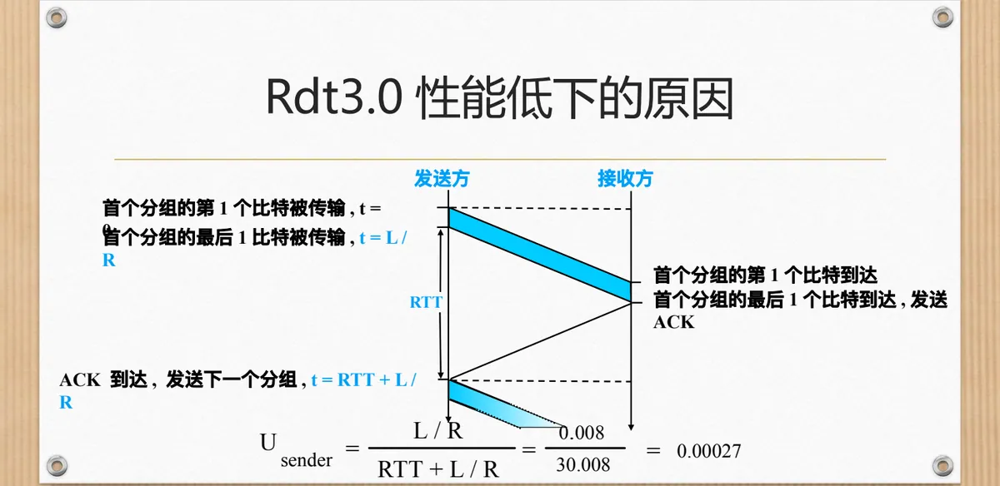
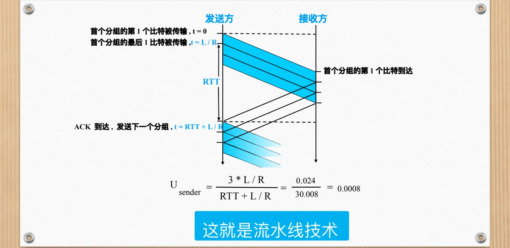
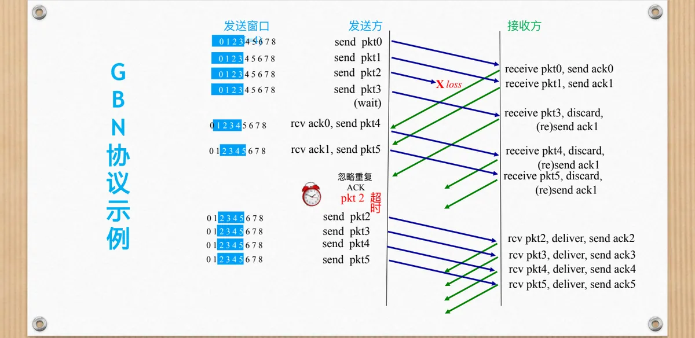
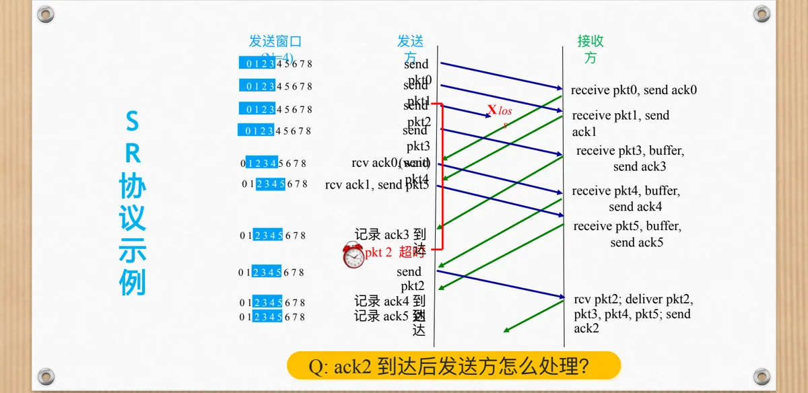
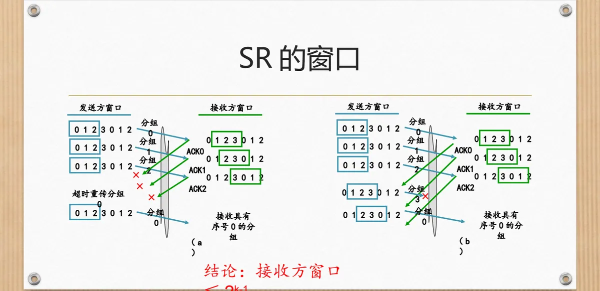
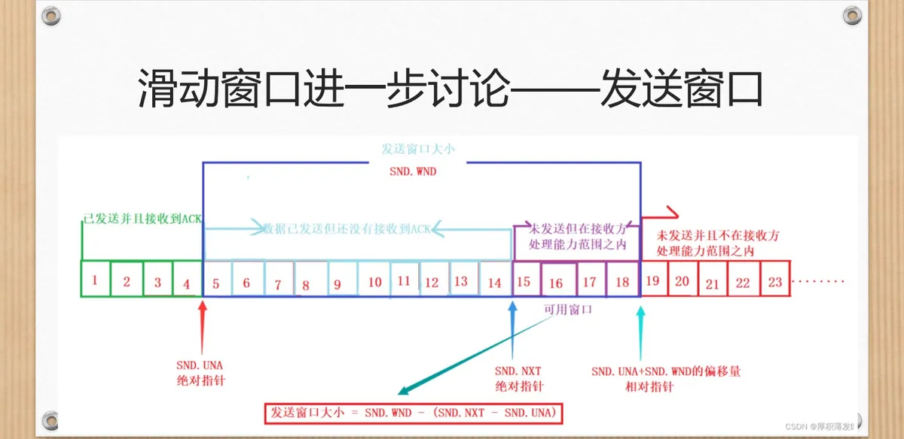

计算机通信与网络 · 第二版讲义 · 第 2 章 网络中的数据通信
2.5 数据可靠传输模型的性能优化
2.4 节设计的 Rdt 协议把「可靠」这件事做成了：数据不丢、不错、不乱序。代价却记在时间上——发送方发完一个分组就得停下来等确认，一条容量很大的链路在整个等待期间只能空转。本节接着这条线索往下走：先算清 Rdt3.0 亏在哪里，再引出流水线技术，然后交代两种在流水线上工作的协议——回退 N 帧 GBN（Go-Back-N）与选择重传 SR（Selective Repeat），比较它们的取舍，最后把滑动窗口的进一步讨论、自动重传请求 ARQ（Automatic Repeat reQuest）协议的分类与窗口设置对性能的影响，以及流量控制机制的来龙去脉讲清楚。
1. Rdt3.0 的性能账：一条 1 Gbps 链路为什么只有 33 kB/s
Rdt3.0 就是 2.4 节的停-等协议：发送方从上层取一个分组，加上校验和与序号发出去，随即启动定时器等待确认；确认到达才发送下一个分组，定时器超时就重传。差错、丢失、重复的问题它都解决了，但任一时刻链路上最多只有一个分组在传送，其余时间链路白白空着。
要看清这份代价，先分清两个时间。一个是分组的发送时延，也就是把分组的所有比特推上链路所需的时间，它等于 L / R：L 是分组长度（bit），R 是链路传输速率（bps）。另一个是一次往返时延 RTT（Round-Trip Time），即分组从发送方到达接收方、确认再从接收方回到发送方所需的全部时间。
课件给了一个很有说服力的算例：链路速率 1 Gbps，端到端延迟 15 ms，分组大小 1 KB。1 KB 等于 8 kb，在 1 Gbps 的链路上发出去只要 8 μs；而端到端延迟 15 ms 意味着一来一回要花 30 ms。发送方在这 30 ms 里只送走了 1 KB，折合吞吐量约 33 kB/s——1 Gbps 的链路，实际用上的部分不到其容量的万分之三。课件的结论说得直白：网络协议限制了物理资源的利用率。
这个结果和链路有多快几乎没有关系：速率 R 越高，L / R 越短，等待在整轮时间里的占比反而越大；而 RTT 由传播距离和中间设备的处理时延决定，协议本身无从缩短。
（1）一次分组交换的时间线
把「发一个分组」按时间铺平，瓶颈就很直观。设 t = 0 时发送方开始传输某个分组的第一个比特，到 t = L / R 时最后一个比特才传输完毕；分组在链路上传播，接收方收到最后一个比特、校验无误后才回送确认 ACK（Acknowledgement）；确认再经过一段传播时延回到发送方，发送方此时才能发送下一个分组，时间已经来到 RTT + L / R。整个往返期间链路上只跑着一个分组，链路的带宽绝大部分时间是闲置的。

2. 流水线技术：让链路不再空等
提高性能的方向，课件归结为三条：允许发送方发送多个分组而无需等待确认；必须增大序号范围，否则在途的多个分组无法区分；协议的发送方与接收方都必须对分组进行缓存，以备重传和交付。三条一起做到，链路上就会同时存在多个分组，像管道里连续流动的水，这种办法因此称为流水线技术。

（1）序号要扩大，缓冲区要变大
流水线要落地，先得解决两个具体问题。第一个是序号：既然同时在途的分组不止一个，就要用 k 位二进制为分组编号，序号空间为 2k，序号在 0 到 2k − 1 之间循环使用。第二个是缓冲区大小：发送方得留着已发送但未确认的分组以便重传，接收方得能安放陆续到达的分组，能容纳这些分组的范围就叫窗口。
窗口是滑动窗口机制的核心。发送方在窗口范围内可以连续发送而无需等待确认；每收到一个确认，窗口就向前滑动。窗口左边界之前是已经确认、可以释放的分组，窗口内是已发送待确认或者随时可以发送的分组，窗口右边界之外暂时不能使用。窗口开多大才够？2.4 节讨论缓冲区大小时给出的「不小于带宽-时延积」，回答的正是这个问题：一个 RTT 内能发出去的数据量，就是窗口至少要覆盖的范围。
3. 回退 N 帧 GBN
流水线上同时有多个分组在途，丢包该怎么办就有了两种答案：只重传丢失的那一个，或者把它和它后面已经发出去的分组一起重传。前者是选择重传 SR（Selective Repeat）协议，后者是回退 N 帧 GBN（Go-Back-N）协议。GBN 实现简单，先看它。
（1）发送方：一个定时器，一次重传一批
GBN 发送方要维护三个量：窗口基序号 base，即最早的已发送但未确认的分组序号；下一个待用序号 nextseqnum；窗口长度 N。上层交来数据时，只要 nextseqnum 还落在 base + N 以内（窗口没满），就为这份数据生成分组并发送；窗口已满则拒绝上层的数据，等确认到达、窗口滑动之后再说。只有当 base 与 nextseqnum 相等、链路上没有未确认分组时才启动定时器——GBN 发送方对所有已发送但未确认的分组只设一个定时器，它盯住的是最早的那个未确认分组。
超时后的动作最能体现 GBN 的性格：定时器一响，发送方从 base 开始，把窗口中所有已发送的分组连同丢失的那个一并重传，而不是只补发一个。收到确认时，它按确认号把 base 前推到该序号之后；若此时 base 追上了 nextseqnum，说明已发分组全部得到确认，撤销定时器，否则为新的 base 重启定时器。
（2）接收方：只认按序到达的分组
接收方只维护一个期望序号 expectedseqnum。只有当分组的序号正好等于 expectedseqnum 且校验无误时，它才把数据交付上层，让 expectedseqnum 加一，并用新序号回送确认。序号对不上的分组一律丢弃，随后重发一次「按序到达的最高序号分组」的确认。这意味着接收方不必缓存任何乱序分组，接收窗口恒等于 1。
（3）一次丢包的完整过程
课件的例子取发送窗口 N = 4，序号在 0 到 8 之间循环。发送方连续发出 pkt0、pkt1、pkt2、pkt3，其中 pkt2 在途中丢失。接收方按序收到 pkt0、pkt1，分别回送 ack0、ack1；随后到达的 pkt3 序号不连续，被丢弃，并再次回送 ack1。发送方收到 ack0、ack1 后继续发出 pkt4、pkt5，它们同样因为序号不连续被丢弃，接收方重复回送 ack1。这些重复确认在 GBN 里没有带来新信息，被发送方忽略；直到 pkt2 的定时器超时，发送方才从 pkt2 起把 pkt2、pkt3、pkt4、pkt5 一起重传。这一次接收方按序收下，逐个交付上层并回送 ack2 到 ack5，传输恢复。

把这些规则收拢起来：GBN 采用累积确认，ACK(n) 的意思是「n 以及 n 之前的全部分组都收到了」；发送方只设一个定时器；超时(n) 时重传 n 以及窗口中所有序号大于 n 的分组；遇到失序分组就丢弃，并重发按序到达的最高序号的确认。正因为接收方不缓存乱序分组，它才用得上累积确认——确认号本身就等于「下一个期望收到的序号」。
接收方不缓存，也限定了发送窗口的上限：序号用 k 位编码时，GBN 的发送窗口最大只能取 2k − 1。道理在于，如果窗口恰好等于整个序号空间 2k，那么当窗口内所有分组的确认都丢失时，发送方重传的旧分组与接收方期待的新分组序号完全重合，接收方无从分辨，会把重传的旧数据当成新数据交付上层。让窗口比序号空间少一个，这种歧义便不会出现。
4. 选择重传 SR
GBN 的代价很直接：一次丢包会连累它之后所有已经正确到达的分组，窗口越大，白重传的分组越多。选择重传 SR 换了个思路，只补发真正丢失的那一个，代价是收发双方都要多做一点事。
（1）发送方与接收方的规则
SR 发送方为窗口内每个已发送但未确认的分组分别设置定时器。上层交来数据时，只要下一个可用序号落在窗口内就打包发送；某个分组的定时器超时，只重传该分组并重置它的定时器，窗口内其他分组不受影响。收到 ACK(n) 时，若 n 落在发送窗口的范围之内，就把分组 n 标记为已接收；若 n 恰好是窗口基序号 sendbase，说明从基序号起有一串分组连续得到确认，窗口基序号随之前推到下一个尚未确认的序号。
SR 接收方的窗口不再固定为 1。序号 n 落在接收窗口的范围之内时，无论到达是否按序，接收方都先回送 ACK(n)；如果是失序到达的，就把分组缓存下来，等前面的空缺补上。一旦某个分组按序到达，接收方就把它连同缓存中后续连续的分组一起交付上层，并把窗口前推到下一个尚未收到的分组。刚落在窗口后面那些序号上的分组，属于「已经确认过、但确认可能丢失」的旧分组，接收方需要再次回送它的确认，而不能当作新数据交付；其余情况一律忽略。
（2）一次丢包的处理过程
课件同样用 N = 4 举例。发送方连续发出 pkt0 到 pkt5，其中 pkt2 丢失。接收方按序收到 pkt0、pkt1 后交付上层并回送 ack0、ack1；随后到达的 pkt3、pkt4、pkt5 虽然失序，却被缓存下来，并分别回送 ack3、ack4、ack5。发送方那边只有 pkt2 的定时器会超时，因此只重传 pkt2 一个分组；接收方收到 pkt2 后，连同先前缓存的 pkt3、pkt4、pkt5 一起按序交付上层，并回送 ack2。一次丢包只付出一个分组的重传代价，这就是 SR 相对 GBN 的优势。

（3）SR 的窗口为什么不能太大
接收方愿意缓存乱序分组，窗口就可以大于 1，但也不能随意放大。课件用两组窗口推移过程的对比说明了原因：当发送窗口与接收窗口的长度之和超过序号空间时，接收方看到的序号会与旧分组重合，此时它无法判断刚收到的那个「序号 0 的分组」究竟是发送方新发来的数据，还是上一轮传输中确认丢失后重传的旧分组——判断错了，要么把重复数据交付上层，要么把新数据当成旧数据丢掉。课件的结论很明确：接收方窗口 ≤ 2k−1，也就是最大只能取序号空间的一半。

5. GBN 与 SR 的对比
两个协议的差别集中在四件事上：确认怎么给、定时器怎么设、超时后重传多少、失序分组如何处置。课件把这张对照表列得很清楚。
| 比较项 | GBN | SR |
|---|---|---|
| 确认方式 | 累积确认 | 单个确认 |
| 定时器 | 对所有已发送但未确认的分组统一设置一个定时器 | 对所有已发送但未确认的分组分别设置定时器 |
| 超时(n) | 重传分组 n 和窗口中所有序号大于 n 的分组 | 仅重传分组 n |
| 失序分组 | 丢弃（不缓存），接收方无缓存；重发按序到达的最高序号分组的确认 | 缓存；对失序分组进行选择性确认 |
两条路线各有各的账。GBN 把复杂度放在「重传更多」上：接收方不需要任何缓存，发送方只维护一个定时器，实现简单，代价是丢一个分组就可能白重传一整窗；SR 把复杂度放在「收发双方」上：发送方要逐分组维护定时器，接收方要准备缓存并做选择性确认，换来的是只重传真正丢失的分组。链路差错少、窗口不大时，GBN 的简单更划算；链路差错多、带宽-时延积大时，SR 省下的重传量更可观。
6. 滑动窗口的进一步讨论
GBN 与 SR 都把「一次能连续发多少、愿意收多少」交给窗口来管。窗口这件事有三个侧面——发送窗口、接收窗口以及两者的大小关系，值得单独理一遍。
（1）发送窗口
发送窗口划定的是发送方「已经发出但尚未确认」的序号范围，也包含随时可以发送的新序号。窗口左沿之前的分组都已确认，发送方可以释放相应缓冲区；窗口内的分组或者已经发出在等确认，或者可以立即发送；窗口右沿之外暂时不能使用。窗口越大，同时在途的分组越多，链路越不容易空闲，但发送方也就需要越大的缓冲区保存这些分组，以备重传。

（2）接收窗口
接收窗口划定的是接收方愿意接收、并可能缓存起来的序号范围。窗口为 1 时，接收方只接受按序到达的那一个分组，其余一律丢弃——这就是 GBN；窗口大于 1 时，接收方愿意把窗口内失序到达的分组先存下来——这就是 SR。接收窗口的大小因此决定了协议需要多大的接收缓存，也决定了它能容忍多大程度的乱序。
（3）窗口大小
三个量之间有一条硬约束：发送端窗口 + 接收端窗口 ≤ 2k，k 是序号编码的位数。在这条约束下，GBN 取发送端窗口 ≤ 2k − 1、接收端窗口 = 1；SR 把接收方窗口放大到不超过 2k−1，发送窗口同样限制在序号空间的一半以内。为什么 GBN 能开到 2k − 1，而 SR 只能到一半？差别就在接收窗口：GBN 的接收窗口恒为 1，发送窗口开得再大也不会出现新旧分组混淆；SR 的接收窗口大于 1，两个窗口一相加就容易越过整个序号空间，接收方随即失去分辨能力。序号位数一旦确定，两端的窗口大小就是绑在一起的。
7. ARQ 协议与窗口设置对性能的影响
（1）ARQ：自动重传请求
停-等协议、GBN 与 SR 属于同一个家族，课件把它们统称为自动重传请求 ARQ（Automatic Repeat reQuest）协议。名字里的「自动重传」点出了共同机制：利用确认和超时，保证数据可靠到达——收到确认就继续发送，超时没有确认就重传，整个过程不需要人工干预。三者的区别只在于确认怎么给、超时后重传多少。
这个家族包括三类协议：RDT 协议，也就是停-等协议（Stop-and-Wait）；回退 N 帧（GBN）；选择重传（SR）。它们的窗口设置相差很大，放在一张表里对照最清楚。
| 协议类型 | 最大发送窗口 | 接收窗口 |
|---|---|---|
| 停-等协议 | 1 | 1 |
| GBN | N < 序号空间大小 | 1 |
| SR | N < 1/2 × 序号空间大小 | N |
三类协议的分工在这张表里一目了然。停-等协议的发送窗口与接收窗口都只有 1，任何时候链路上最多一个分组；GBN 的接收窗口仍是 1，发送窗口却能一直开到接近整个序号空间，代价是一次丢包要重传一批；SR 的接收窗口可以大于 1，换来「只重传丢失的那一个」，代价是发送窗口被压到序号空间的一半以内。窗口越大，能同时在途的数据越多，吞吐率越高，但接收缓存与定时器的开销也随之上涨。
（2）窗口设置对性能的影响
窗口与吞吐率的关系，课件讲得很直接：窗口越大，吞吐率越高，但这个收益有天花板，天花板由「信道带宽 × 时延」，也就是带宽-时延积决定。窗口再大，一个 RTT 内能放进链路的数据量也不会超过这个乘积，多出来的分组只能在发送方排队，并不能让链路跑得更快。所以最佳窗口值通常按带宽-时延积来估算：让它正好把一个 RTT 内发出的数据全部装下，链路既空闲不下来，也不会在发送方堆积。
另一面是实现的代价。SR 要求接收方具备缓存乱序分组的能力，发送方要为每个未确认分组分别维护定时器，复杂度和缓存开销都高于 GBN，窗口开得越大，这两项开销越大。选哪类协议、窗口取多大，说到底是在吞吐率与实现复杂度之间做取舍——这也回头印证了 2.4 节讨论缓冲区大小时的结论：缓冲区既不能小于带宽-时延积，也不可能无限大。
8. 流量控制机制初探
把前面几条线索并起来看，数据可靠传输协议可以按「发送方一次能发多少、接收方愿意收多少」分成两支：一支是停等，一支是滑动窗口，而滑动窗口又有 GBN 与 SR 两种实现。这条线索的末端落在一句话上：接收方控制发送方。
这句话正是流量控制的雏形。窗口本身就是一份额度：接收方通过确认号和它能够接收的范围，告诉发送方「我还能收多少」，发送方据此限制在途数据的数量，发得太快就会被窗口挡住。于是同一次交互既完成了可靠传输，又完成了一次流量协商——数据不丢、不乱序，也不会把接收方淹没。2.4 节谈过的接收缓冲区大小、这一节谈过的接收窗口上限，都是这套机制的边界；至于网络整体意义上的「发得太快」，则要留到后面讲拥塞控制时再处理。
9. 本章回顾与接下来
走到这里，第 2 章网络中的数据通信就讲完了。课件的回顾把这一章归成五块：网络中的信号及传输介质、网络中的数据传输、数据可靠传输的基本需求、数据可靠传输模型及传输协议的设计，以及数据可靠传输模型的性能优化。前两块回答「信号怎样在介质上传」，中间两块回答「为什么会出错、怎样保证可靠」，最后一块回答「怎样在可靠的前提下传得更快」。
课件列出的后续内容是：数据通信的基本原理、网络提供的服务及应用、局域网、网络互联、拥塞控制与软件定义网络。本节反复出现的「序号」「确认」「重传」「窗口」，在后面这些内容里还会换一种面貌继续出现。
本节小结
- Rdt3.0 用「发一个、等一个」换取可靠，代价是链路在等待期间空转：1 Gbps 链路、15 ms 端到端延迟、1 KB 分组，每 30 ms 只能送走 1 KB，吞吐量约 33 kB/s，瓶颈在协议行为而不在链路带宽；
- 流水线技术要求三件事：允许连续发送多个分组、用 k 位序号扩大序号范围、收发双方扩大缓冲区；能容纳未确认分组的范围就是窗口，窗口随确认到达向前滑动，2.4 节的带宽-时延积给出了窗口至少要多大的依据；
- GBN 用累积确认、单个定时器，失序分组一律丢弃、接收窗口恒为 1，超时后重传 n 以及窗口中所有序号大于 n 的分组，发送窗口最大为 2k − 1；SR 用单个确认、逐分组定时器，失序分组缓存并选择性确认，只重传丢失的那一个，接收窗口最大为 2k−1；
- 两个协议的取舍是吞吐率与实现复杂度之间的权衡：GBN 实现简单，但一次丢包可能白重传一批；SR 重传量小，却要付出缓存与更多定时器的代价。窗口越大吞吐率越高，上限由带宽-时延积决定；
- 停-等、GBN 与 SR 同属 ARQ 协议，共同点是利用确认和超时保证数据可靠到达，区别只在窗口设置（发送端窗口 + 接收端窗口 ≤ 2k）；而「接收方控制发送方」正是流量控制机制的起点；
- 第 2 章至此收束：信号与传输介质、数据传输、可靠传输的基本需求、协议设计到本节的性能优化构成一条完整线索，后面将转入数据通信的基本原理、网络提供的服务及应用、局域网、网络互联、拥塞控制与软件定义网络。